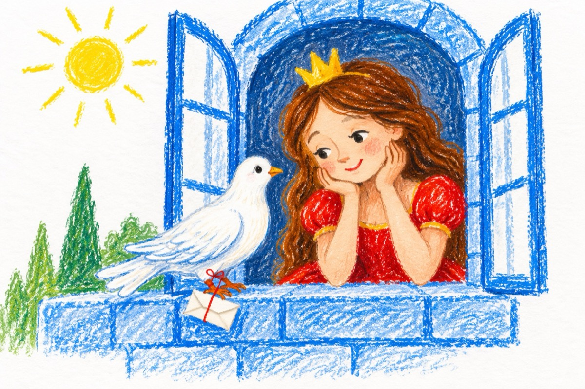

Prințesa
Astăzi în palat la geam
A sosit un porumbel
Voiam bune vești să am
De la el!...
Prințul meu luptă departe
Cu un zmeu ce mi-a furat
Coroana cu diamante
De la Verde Împărat.
Coronița-i fermecată
Trei dorințe împlinește:
Și de-aceea-i căutată
Fiindcă forța îi sporește.
Scrisorica ce-a adus-o
Porumbelul la picior,
Vestește că l-a răpus
Pe cel zmeu necruțător
Dar mai rea decât leoaica
Îl așteaptă în pădure
Baba Cloanța, zgripțuroaica
Coronița să i-o fure.
Am încălecat atunci
Pe un cal cu aripi de vânt
Și pe câmpul dintre lunci
Cotoroanța am înfrânt.
Și când zorii-și arătară
Peste bezna nopții geană
Prințul a venit în grabă
Pe frunte mi-a pus coroana.
Vasile Groza